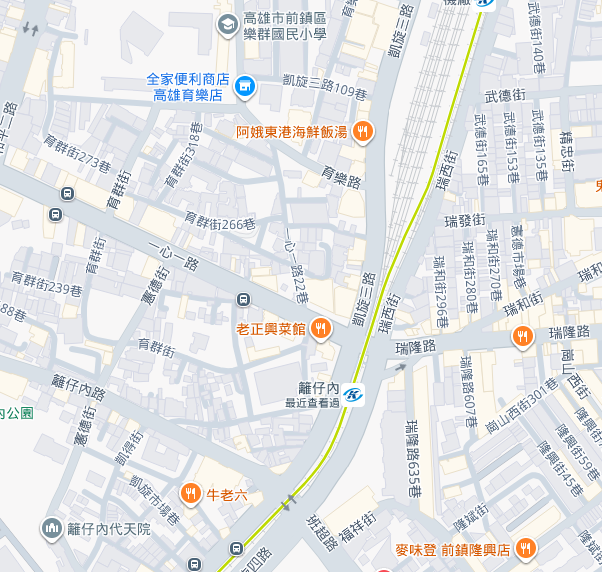

如果這次無法參加實體課程，可參加後續推出的 AI 能幫你做什麼_線上課程。
想報名的朋友或對於課程如果還有不了解的地方，請使用顧問論壇 LINE@ 聯繫我們，方便即時回覆您。
👇課程成果展示👇
👇課程初步講解👇
🚨課程說明：
主 題：AI 能幫你做什麼實體課
目 標：學習把需求說清楚，讓 AI 幫得上忙，練習圖片轉 DWG，核對並修正圖面，做出減少重複操作的小工具程式。
日 期：2026年12月05日(週六)
位 置：高雄市（捷運站 or 車站附近）
時 間：星期六（ 13:00 至 18:00）
時 數：上課時數 5 小時
講 師：Tiger&蘋果爸
軟 體：AutoCAD 2026
系 統：Microsoft Windows
費 用：7,000 元
優 惠1：目前早鳥優惠 4,200 元 (贈送專屬B會員一年,價值 1,500 元)
優 惠2：目前早鳥優惠 3,600 元 (無贈送專屬B會員一年)
解 鎖：課後觀看上課錄影影片(期限四個月) / AI 程式入門線上課程(期限四個月,價值 4,200 元)
附 註：附有 DWG 課程範例供操作練習及相關教學文件筆記
填寫問卷: 👉 https://docs.google.com/forms/d/e/1FAIpQLSd4ajiKotLXrays0ICR-PKUgLqU_d8q09rCZPtidTx7uE63gw/viewform
問卷結果: 👉 https://autocad-tw.my1shop.com/la4v2u
報名人數：小班制。
報名日期：即日起至115年11月19日之前完成報名。
報名方式：請以 官方LINE@ 方式報名。
＝＝＝＝＝＝＝＝＝＝＝＝＝＝＝＝＝＝＝＝＝＝
姓 名：
電 話：
論壇會員名稱：
Gmail 信箱：
銀行帳號後5碼：
＝＝＝＝＝＝＝＝＝＝＝＝＝＝＝＝＝＝＝＝＝＝
🎁LINE@報名：
AutoCAD顧問LINE@
👉 4200元 信用卡付費(點我) 👈 👉 3600元 信用卡付費(點我) 👈
👇國內銀行轉帳：使用ATM轉帳/臨櫃轉帳方式：
＝＝＝＝＝＝＝＝＝＝＝＝＝＝＝＝＝＝＝＝＝＝
匯款銀行：合作金庫銀行 雙和分行
銀行代號：006
銀行帳號：1449872294172
銀行戶名：黃婕瀅
＝＝＝＝＝＝＝＝＝＝＝＝＝＝＝＝＝＝＝＝＝＝
🛎報名注意事項：
1.目前規劃第一梯次上課，以先繳費順序的人確定您的上課名額，以利我們安排正式課程時間及上課教室地點。
2.上課電腦 Windows 系統及 AutoCAD 軟體 (訂閱制 Gemini Chatgpt)。
3.完成銀行匯款繳費後，請以 官方LINE@ 通知我們，以及您的姓名及論壇會員名稱 (尚未加入的朋友請撥空免費註冊加入)。
1.信件報名確定後，通知「教室位置及地址」。
2.採用投影機教學。
3.練習範例需自備筆記型電腦( Windows 系統)及 AutoCAD 軟體。
4.無筆電同學可以旁聽，回去看上課錄影練習範例，其他狀況會再行補充說明。
高雄輕軌籬仔內站附近
